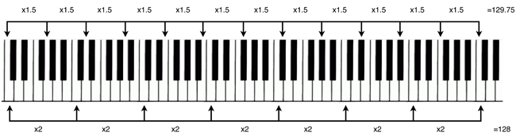

Harmony is all about ratios - at least, from the established Western Perspective. This idea is usually accredited to Pythagoras, who thought that the 'simplest' frequency ratios are the most pleasing to the ear. (He also got slightly carried away and reasoned that the Universe is harmonious so the sizes of the orbits of the planets must also satisfy simple ratios, and the planets produce an inaudible Music of the Spheres... he was wrong about that.)
In Just Intonation, we can write out all of the notes of the major scale (e.g C major) as simple fractions of the base note's frequency:
And for a minor scale (e.g. C natural minor):
(Actually, I just found out that Pythagoras advocated a different system of tuning based on a different notion of 'simple ratios', but most people agree that the major chords do not sound nice.)
In the time before The Well Tempered Clavier, this was all well and good, except for when people wanted to play their keyboard in a different key. The notes of the scale in just intonation in one key have different frequencies compared to the corresponding notes in the other scales.
If you need convincing of that, check the ratios. Clearly, the ratio that takes you from D to E in the C major scale is (5/4)/(9/8) = 10/9, which is different (although quite close) to 9/8. So the interval from D to E is different from the interval from C to D, so the 'E' that we need for the D major scale is different from the 'E' that we've got from the C major scale. Oh no...
In around 1580, someone invented Equal Temperament. Basically, they adjusted each of the notes in the C major scale a bit, so that each of the 'tones' are represented by the same frequency ratio. They wanted to keep an octave as 2/1. There are 12 semitones in an octave. So if all the semitones are equal, then their frequency ratio is fully determined: it's 2^(1/12). The updated C major scale now becomes:
We are used to hearing equal temperament everywhere, because that's how modern keyboards are tuned, and that's how woodwind instruments have to be tuned if they're going to be able to play in different keys. But it's kind of wrong - pure, rational ratios are the most pleasing to the ear. (I would be interested to know, why does our brain like these ratios and how does our ear detect them so well?) But none of the equal temperament intervals, except for unison and the octave, are rational :( .
We can actually tabulate the error of equal temperament from just intonation - here I show the errors for the major scale intervals:
| Note | Just Intonation Ratio (exact) | Just Intonation Ratio (decimal) | Equal Temperament Ratio (exact) | Equal Temperament Ratio (decimal) | Percentage Error |
|---|---|---|---|---|---|
| Unison | 1 | 1.0000 | 1 | 1.0000 | 0.00% |
| Major Second | 9/8 | 1.1250 | 2^(2/12) | 1.1225 | -0.23% |
| Major Third | 5/4 | 1.2500 | 2^(4/12) | 1.2599 | 0.79% |
| Perfect Fourth | 4/3 | 1.3333 | 2^(5/12) | 1.3348 | 0.11% |
| Perfect Fifth | 3/2 | 1.5000 | 2^(7/12) | 1.4983 | -0.11% |
| Major Sixth | 5/3 | 1.6667 | 2^(9/12) | 1.6818 | 0.91% |
| Major Seventh | 15/8 | 1.8750 | 2^(11/12) | 1.8877 | 0.68% |
| Octave | 2 | 2.0000 | 2 | 2.0000 | 0.00% |
You can see that some of the intervals, like a fifth, are pretty close to the just intonation version, but others (e.g. a major sixth...) are totally off!
Now I want to make you see and hear the difference, instead of just looking at the numbers.
When I was a teenager, I played the cello and usually, you tune a cello using 'harmonics'. You can play the same harmonic note on two of the strings, and you adjust the tuning (with the tuning pegs) until the pitches match. Playing very similar pitches one after the other, it can be hard to tell how well you're doing. But if you play them at the same time, you can hear 'beats' (that is, the increase and decrease in volume as the sound waves fall in and out of phase). My teacher taught me to use the 'beats' to judge the tuning accuracy. If the pitches (frequencies) are identical, there are no beats at all, and as you tune the strings to make the pitches closer together, the beats become slower and slower.
In this demonstration, I overlay the sound waves for the just intonation and equal temperament notes of the scale, and I also play the sound waves! You can both see and hear the beats in the composed sound waves, and you can clearly see and hear that some of the equal temperament intervals (e.g. the fifth) have much lower discrepancy (slower beats) than other intervals (e.g. the major sixth).
The Circle of Fifths is the music theory concept that if you start on any note, and go up a fifth, and repeat this, you eventually cycle through all of the notes and you are back to where you started, in a higher octave (in theory... it will definitely be out of my singing range). It should be familiar to anyone who was put through Grade 5 Music Theory in the UK...
E.g. if you start on a C, and keep on going up in fifths, you will eventually get: C -> G -> D -> ... -> F -> C .
The Circle of Fifths has 12 notes. It looks like a clock.
Let's just check that it works. In just intonation, a fifth corresponds to the ratio 3/2. Now, going up a fifth 12 times corresponds to a ratio of (3/2)^12 ~ 129.746337891. But wait - that's not an integer :'( . To be the same note in a different octave, the frequency ratio needs to be a power of two. It's quite close to a power of two (2^7 = 128) but it isn't. So, the circle of fifths is a lie, in just intonation.
However, the Circle of Fifths does work in Equal Temperament, because (2^(7/12))^12 = 2^7 = 128. So going up by an equal temperament fifth, 12 times, does take you back to the same note of the scale.
In conclusion, the options are:
Disclaimer: produced music is usually played in Equal Temperament, but it isn't strictly followed. It depends on whether you are playing in an orchestra, on a keyboard or in an unaccompanied choir, and if there's a particular interval in the piece that you really want to sound good (watch this video about John Frusciante detuning his guitar to make the major third in the intro of Scar Tissue sound more resonant.) It's messy, inconsistent and annoying. The only real conclusion I can draw is,
Western music is all a lie.